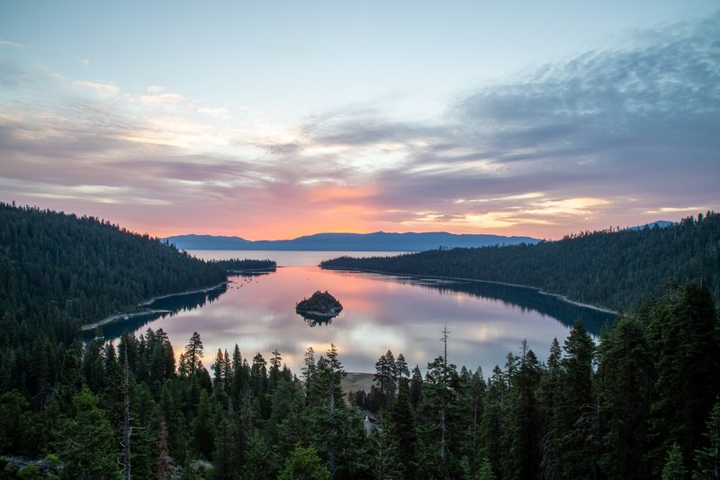
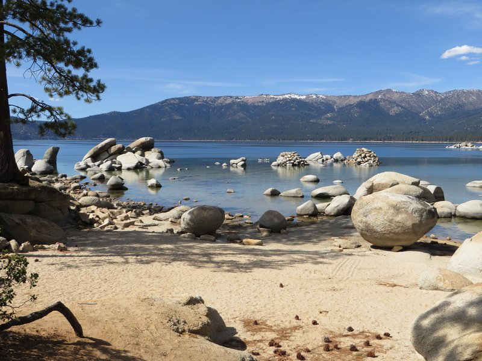
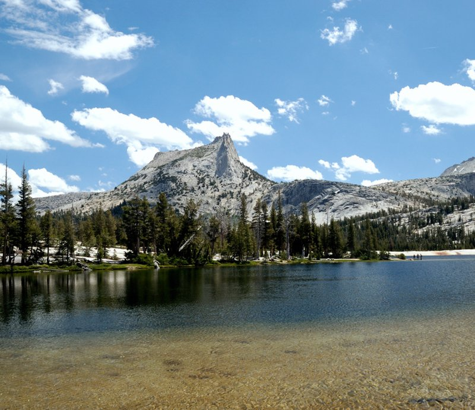
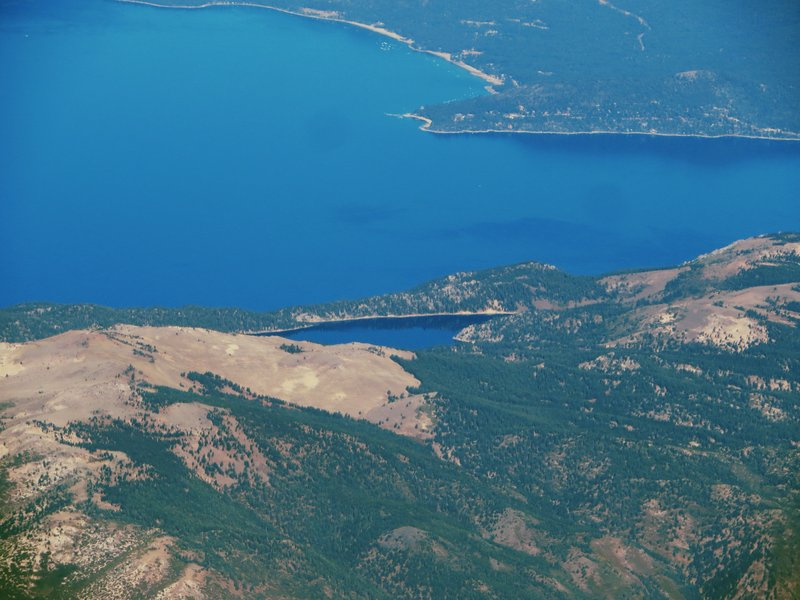
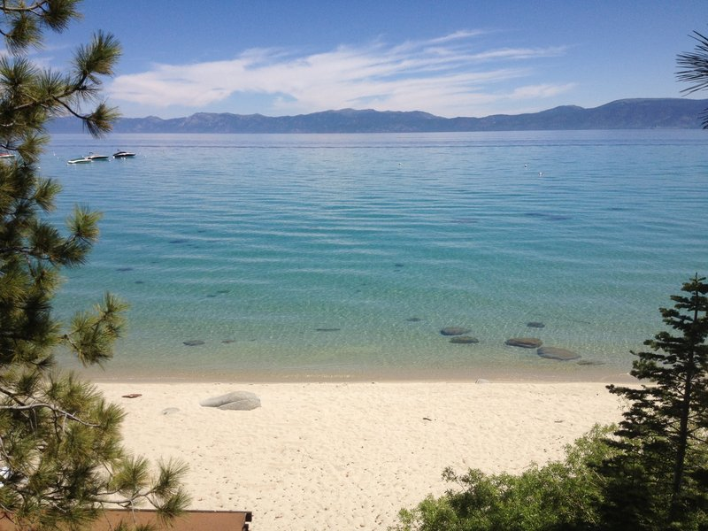
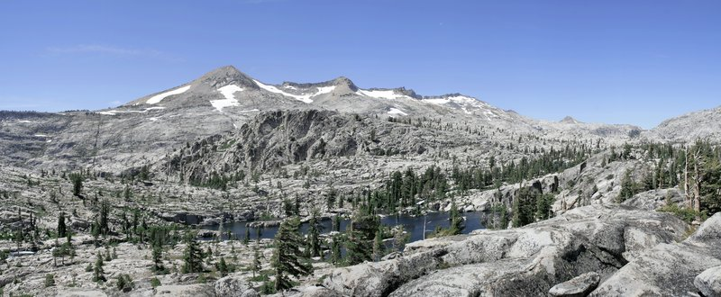
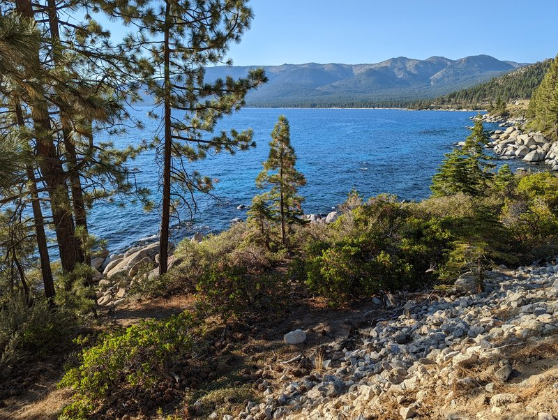

Day 1
🏨 From Hotel: 🚶 2 min · 🚕 5 min → Emerald Bay
1. Emerald Bay
↳ The most photographed cove on the lake, rimmed by granite cliffs and framed by Fannette Island, the only island in Lake Tahoe. Crystal-clear turquoise water and a hidden sandy beach at the cove's base—accessible by trail or boat.

🚶 8 min · 🚕 12 min → Tahoe City
2. Tahoe City
↳ The charming alpine village anchoring the north shore, with galleries, independent shops, and waterfront beaches. Commons Beach is the main gathering spot—sandy, open-water, and framed by the Sierra peaks.

🚶 6 min · 🚕 15 min → Sand Harbor
3. Sand Harbor
↳ Nevada's premier lake beach, wide and sandy with sparkling clear water and excellent visibility for swimming. Backed by a park with picnic areas and year-round events—home to the Lake Tahoe Shakespeare Festival.

🚶 3 min · 🚕 25 min → hotel
Day 2
🏨 From Hotel: 🚶 3 min · 🚕 8 min → Mount Tallac Trailhead
1. Mount Tallac
↳ The 9,738-foot sentinel of the south shore, with a moderate-to-strenuous 2.5-hour climb rewarding hikers with 360-degree views of Lake Tahoe, Carson Valley, and the High Sierra. The peak is the dominant landmark from the lake itself.

🚶 5 min · 🚕 10 min → Cathedral Lake
2. Cathedral Lake
↳ A pristine alpine lake at 8,200 feet, ringed by granite peaks and accessible via an easy 1.5-hour hike. The Cathedral Range backdrop and crystal-clear water create a striking mountain basin perfect for photography and reflection.

🚶 4 min · 🚕 12 min → Marlette Lake
3. Marlette Lake
↳ A hidden alpine gem accessible by an easy 2-hour roundtrip hike, nestled at 8,000 feet with dramatic granite walls. Built as a reservoir in the late 1800s but retaining wild beauty—the water is impossibly clear and the setting feels isolated.

🚶 2 min · 🚕 22 min → hotel
Day 3
🏨 From Hotel: 🚶 2 min · 🚕 8 min → Rubicon Bay
1. Rubicon Bay
↳ A dramatic western cove accessed only by boat or a steep lakeside trail, with towering granite cliffs and a secluded rocky beach. The cliff faces drop straight into the lake and are a favorite spot for kayakers and swimmers seeking alpine solitude.

🚶 6 min · 🚕 10 min → Crater Lake
2. Crater Lake
↳ A scenic alpine lake in the Crystal Range, reached via a moderate 4-mile hike offering views of Pyramid Peak's granite spires. The setting is high country at its finest—wild, remote, and rarely crowded despite being just 45 minutes from the valley.

🚶 3 min · 🚕 14 min → Flume Trail
3. Flume Trail
↳ A legendary mountain-bike descent carved into the eastern slope above Lake Tahoe, offering 14 miles of swooping singletrack with unobstructed lake views. The trail is closed to bikes November–June but open to hikers year-round—a thrilling perspective on the lake's scale.

🚶 4 min · 🚕 20 min → hotel
🗓️ Weekly Closures
No notable city-wide weekly closures in Lake Tahoe.
📅 Tours
Viator
↳ Narrated voyage around the lake with stops at Emerald Bay and Fannette Island, featuring geology and natural history commentary.
🕐 9:00am · ⏳ 2 hr · 👥 Small group
🚕 18 min
↳ Guided hike to Mount Tallac summit with naturalist commentary on ecology, geology, and Sierra history. Moderate to strenuous.
🕐 7:00am · ⏳ 5 hr · 👥 Small group
🚕 8 min
↳ Photography-focused tour at sunrise with expert guidance on composition and camera settings; includes alpine lakes and mountain peaks.
🕐 5:30am · ⏳ 3 hr · 👥 Small group
🚕 5 min
↳ Paddling tour of coves and beaches with instruction for all levels; view granite cliffs and wildlife from the water.
🕐 9:00am · ⏳ 3 hr · 👥 Small group
🚕 18 min
↳ Scenic section of the 165-mile Tahoe Rim Trail with guide; includes alpine meadows, forest, and lake vistas.
🕐 8:00am · ⏳ 4 hr · 👥 Small group
🚕 10 min
GetYourGuide
No qualifying tours on GetYourGuide in Lake Tahoe.
TripAdvisor
No qualifying tours on TripAdvisor in Lake Tahoe.
☕ Cappuccino
No café within 25 min walk of the hotel.
🫕 Restaurants Near Hotel
No restaurants within 25 min walk of the hotel.
🍽️ Downtown Restaurants
No restaurants in downtown Lake Tahoe.
🍮 Local Tastes
Tahoe Trout
↳ Grilled or smoked, a staple at waterfront restaurants and casual cafes. The lake's cold, clear water produces pristine white fish.
Mountain Game
↳ Venison, elk, and duck from the High Sierra appear on fine-dining menus, prepared with forest mushrooms and dried berries.
Pine Nuts and Manzanita Berries
↳ Foraged ingredients used in sauces, desserts, and bread at upscale lodges across the basin.
🎭 Shows, Performances & Concerts
No exceptional shows, performances, or concerts in Lake Tahoe.
🚆 Train Stations Near Hotel
No train stations in Lake Tahoe.
🏓 Pickleball
Tahoe Paradise Park · Outdoor
↳ 8 outdoor courts with lights; day use fee, no reservation needed
🏛️ Daily 8:00am - 8:30pm
🚕 8 min
⭐ Michelin Restaurants
No Michelin-starred restaurants in Lake Tahoe.